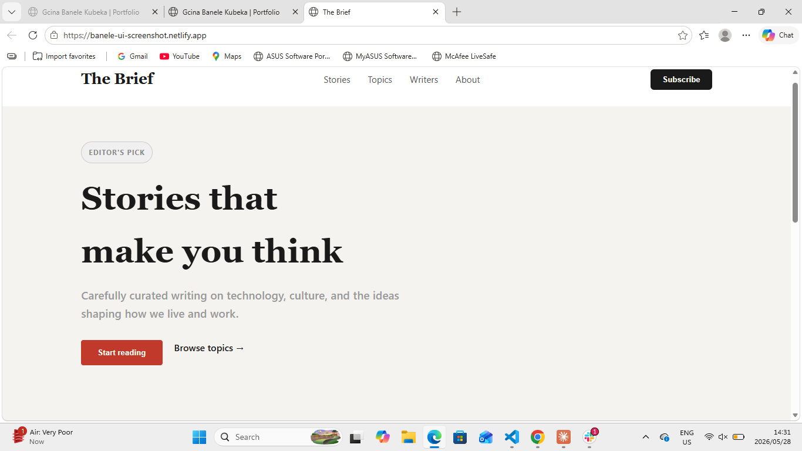

📌 Project Overview
This project is a UI recreation of a modern news tabloid layout using HTML and CSS. The goal was to understand layout systems, typography, and responsive design.
🎯 Problem Statement
News websites use complex layouts with multiple content blocks and hierarchy. The challenge was recreating this structure accurately and making it responsive.
🧠 My Role
UI Designer + Frontend Developer
⚙️ Process
- Studied real news website layouts
- Created wireframe structure
- Built layout using CSS Grid
- Used Flexbox for components
- Added responsive design
🖼️ UI Preview

💻 Implementation
CSS Grid was used for the main layout structure, while Flexbox handled internal alignment of cards and articles.
🧪 Challenges
Maintaining consistent spacing and responsiveness across screen sizes was the biggest challenge, solved using grid gaps and media queries.
🚀 Outcome
A fully responsive news tabloid layout that improved my understanding of real-world UI structure.
📚 Key Learnings
- CSS Grid mastery
- Responsive design thinking
- UI hierarchy and spacing